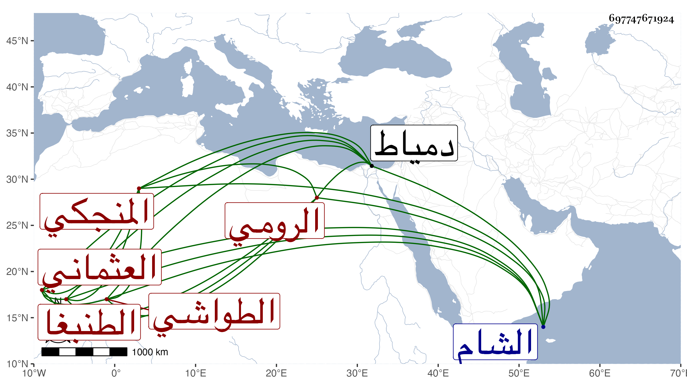

0902Sakhawi.DawLamic.ITO20230111-ara1.EIS1600.697747671924
Biography ID: 697747671924
950
عبد اللطيف زين الدين الطواشي الرومي المنجكي العثماني الطنبغا ممن خدم بعد موت سيده فاطمة ابنة منجك فعرف به ثم انتقل لخدمة جقمق الأرغون شاوي نائب الشام فلما قتله الظاهر ططر استخدمه وجعله من خاص جمداريته فدام سنين مع ملازمته خدمة الطائفة القادرية إلى أن وقع بينها وبين الرفاعية تنازع في أواخر الأيام الأشرفية برسباي فشكاه حسن نديمه إليه فطلبه وقال له أنت جمدار أم نقيب وضربه وأخرجه من الجمدارية فلما استقر الظاهر ولاه مقدم المماليك بعد القبض على خشقدم اليشبكي فدام مقدما سنين وحج أمير الركب الأول مرة بعد أخرى ثم انفصل بجوهر النوروزي نائبه في سنة اثنتين وخمسين وأقام بطالا يتردد لثغر دمياط لعمارة له هناك فيها مآثر إلى أن مات في ليلة الجمعة رابع عشري صفر سنة احدى وستين ودفن من الغد وقد ناهز الثمانين وكان دينا خيرا صالحا متواضعا كريما محبا في الفقراء رحمه الله وإيانا .
